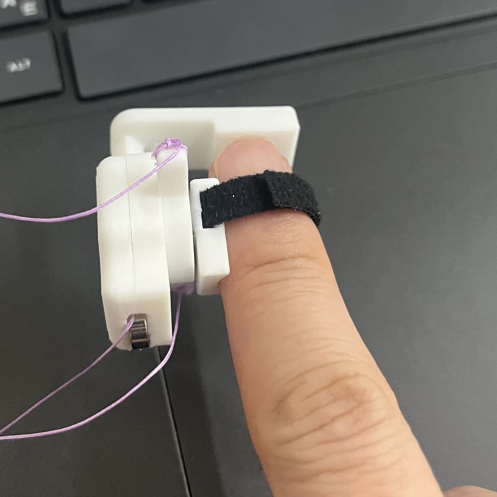
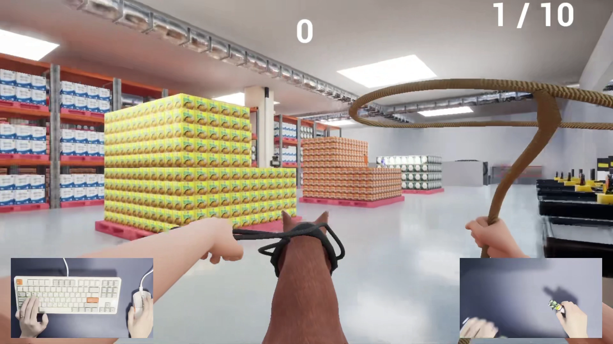

게임의 입력과 피드백을 다루는 프로젝트를 진행해 왔습니다. 상호작용을 기획하고, 이를 위한 장치를 제작하며, 게임과 연결해 동작을 확인합니다.
Research Interests
Human–Computer Interaction / Haptic Interfaces / Physical Interaction / Games and XR
프로젝트
동작 입력에서 손끝 피드백으로 이어진 두 프로젝트입니다.

학력
상명대학교
게임전공 학사 과정 · 2027년 2월 졸업 예정
Jul–Aug 2026
한국전자통신연구원 (ETRI)
하계 연구연수생 · 감성컴퓨팅연구실
Mar–Jun 2026
경희대학교 Haptics and Virtual Reality Lab
학부연구생